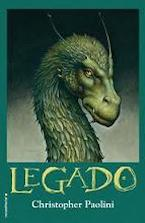
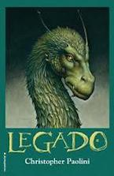

En el legendario reino de Alagaësia...
...la guerra se está gestando. Los jinetes, protectores de la paz del Imperio y los únicos capaces de controlar a los inteligentes dragones, se han extinguido o han pasado a formar parte de las tropas del malvado rey Galbatorix. Los elfos hace tiempo que se han exiliado a un lugar oculto y los vardenos, un grupo disidente, se oculta en ciudades protegidas.
...la guerra se está gestando. Los jinetes, protectores de la paz del Imperio y los únicos capaces de controlar a los inteligentes dragones, se han extinguido o han pasado a formar parte de las tropas del malvado rey Galbatorix. Los elfos hace tiempo que se han exiliado a un lugar oculto y los vardenos, un grupo disidente, se oculta en ciudades protegidas.
Cuando Eragon, un joven de quince años que vive en una pequeña aldea, se encuentra con una piedra preciosa en medio del bosque, poco se espera que este suceso vaya a cambiar su vida y el destino de Alagaesïa.
...la guerra se está gestando. Los jinetes, protectores de la paz del Imperio y los únicos capaces de controlar a los inteligentes dragones, se han extinguido o han pasado a formar parte de las tropas del malvado rey Galbatorix. Los elfos hace tiempo que se han exiliado a un lugar oculto y los vardenos, un grupo disidente, se oculta en ciudades protegidas.
Así comienza la apasionante tetralogía Inheritance (Legado), de Cristopher Paolini, que comenzó cuando sólo tenía 15 años, y acaba de concluir recientemente.
...la guerra se está gestando. Los jinetes, protectores de la paz del Imperio y los únicos capaces de controlar a los inteligentes dragones, se han extinguido o han pasado a formar parte de las tropas del malvado rey Galbatorix. Los elfos hace tiempo que se han exiliado a un lugar oculto y los vardenos, un grupo disidente, se oculta en ciudades protegidas.
Dragones, jinetes de dragón, elfos, enanos y toda una serie de seres fantásticos, y de fondo, la eterna lucha del bien contra el mal.


 
